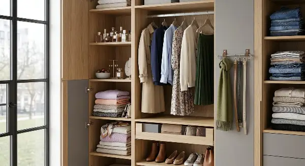
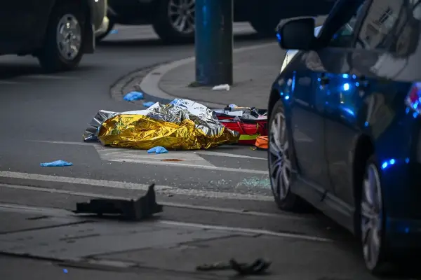
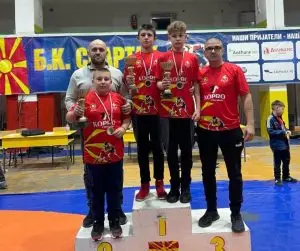
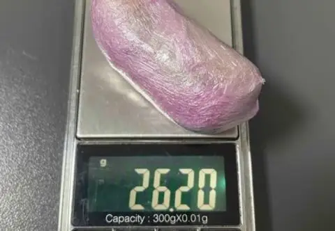

Најнови вести – Страница 416 | DAY.mk

Зошто треба да ставите костени во плакарот: Нашите баби го правеле ова, а тоа носи само добри работи во куќата
Бабите верувале дека костенот може да биде и добра заштита од молци, односно дека ги одбива овие непријатни гости од вашата куќа и плакар со својот мирис.

Постојат индиции дека напаѓачот во Краков бил инспириран од крајнодесничарскa идеологиja, вели полски министер
Осомничениот напаѓач е „застрелан и неутрализиран“ и се наоѓа во болница, во тешка состојба – сооопшти полскиот министер за внатрешни работи, Марчин Кервињски, по денешното пука...

Никола Пешев е најдобар борач на „Легендите на Спартак“
На присутните спортисти и гости им се обрати претседателот на Боречката федерација на Македонија, Дејан Богданов, а турнирот за отворен го прогласи претседателот на Советот на О...
Мети Хили и сопругата Габриет на забавата за новиот албум на Џеси Џо Старк во Лос Анџелес
Мети Хили и неговата сопруга Габриет во петокот вечерта, на 6 ноември, присуствуваа на забавата во Лос Анџелес по повод објавувањето на „Muse“ , новиот албум на Џеси Џо Старк .
Џони Деп за враќањето во „Пирати од Карибите“: Тоа е единственото што го сакам (ВИДЕО)
Сепак, Брукхајмер изјави за Ентертејнмент викли дека планира да направи рестарт и филм со Марго Роби.
Богољуб Кариќ ќе се кандидира за претседател на Србија
Извршниот комитет на Движењето за силата на Србија едногласно одлучи да го предложи српскиот тајкун Богољуб Кариќ на главниот комитет на движењето за кандидат на претстојните из...
Арсен Венгер ќе се кандидира за претседател на ФИФА
Арсен Венгер сериозно размислува да влезе во трката за претседател на ФИФА и да му биде противкандидат на актуелниот претседател Џани Инфантино. Во меѓувреме, се очекува да одрж...

Скопјанец приведен откако кај него бил пронајден хероин
Скопјанец на 46-годишна возраст е приведен откако при полициски преглед кај него бил пронајден хероин. Скопјанец на 46 години е приведен откако кај него бил пронајден хероин.
11 пријави за семејно насилство за едно деноноќие, приведени осомничени во повеќе градови
На подрачјето на Чаир во Скопје, полициски службеници лишиле од слобода 51-годишен маж, по пријава дека физички ја нападнал неговата 47-годишна сопруга. Во Злетово, полициски сл...
Протести против скапотијата и тешката положба на младите во Франција
Најмалку 146. луѓе денеска протестираа низ Франција поради зголемените трошоци за живот и сè потешката положба на младите, но бројот на учесници беше значително помал отколку на...
Најнови Вести